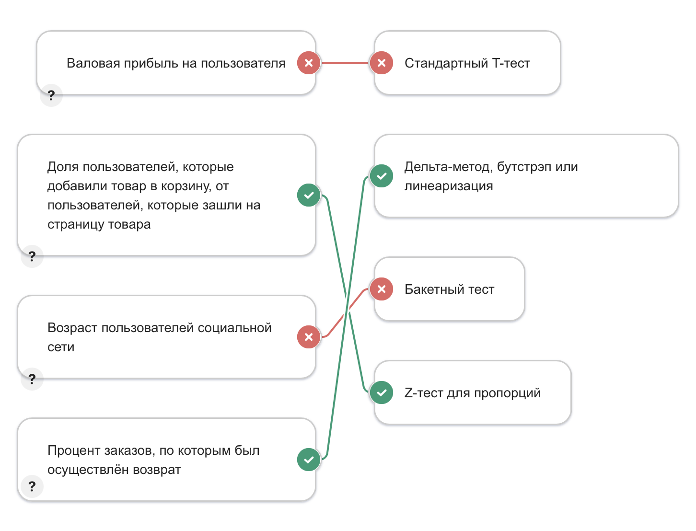
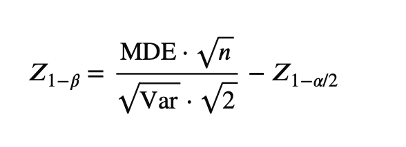
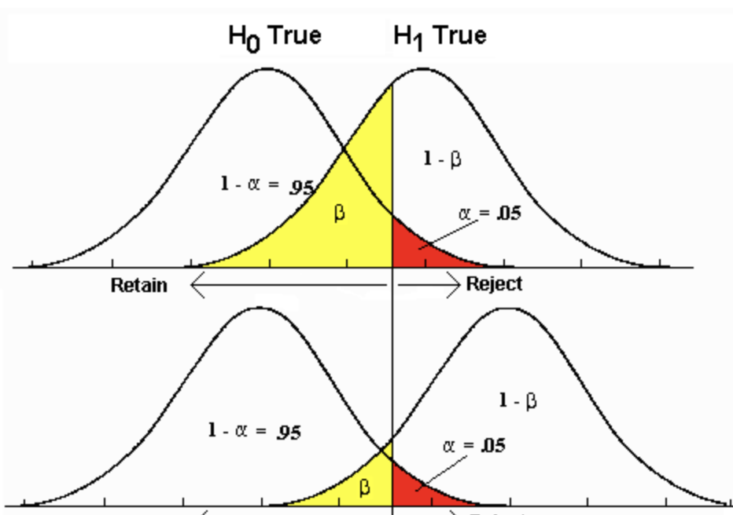
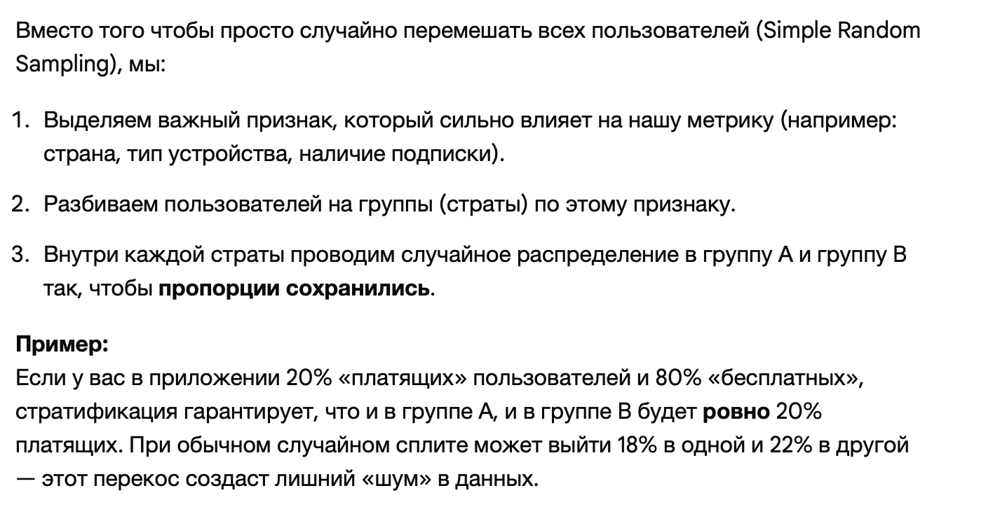
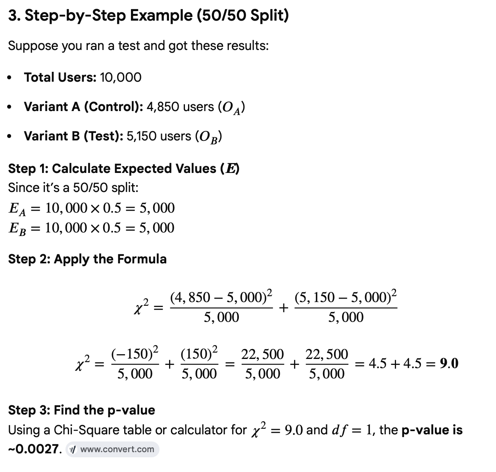

Цель проверки статистических гипотез — на основе небольшой выборки
сделать обоснованные предположения о генеральной совокупности.
Нулевая гипотеза H0 - это исходное предположение о данных.
Альтернативная гипотеза H1 - противоположность
Критические значения формируют область допустимых значений для
статистики, при условии, что нулевая гипотеза верна.
Ошибка первого рода, α, FPR — это ситуация, когда исследователь отвергает
нулевую гипотезу, хотя она на самом деле верна.
Ошибка второго рода, β, FNR — это ситуация, когда исследователь не отвергает
нулевую гипотезу, хотя верна альтернативная.
Мощность статистического теста, 1 − β — это вероятность принять альтернативу, когда верна альтернатива
pvalue - вероятность получить критическое значение статистики или еще более критическое
Выбираем метрики
Можно конечно измерять напрямую выручку, но у нее очень большая дисперсия => потребруеся много наблюдений.
MAPE - Mean Absolute Percentage Error
ARPU - Average Revenue per User
ARPPU - Average Revenue per Paying User
AOV - Average Order Value
Плюс если единица рандомизации (пользователь) не совпадает с единицей анализа (например заказ), то применять z-тест или t-тест не получится, так как не соблюдается независимость величин. Это называется Ratio-метрика
Выбираем гипотезы H0, H1

Смысл использование z-теста для пропорций (а не t-теста) в том, что при пропорциях случайные величины имеются Ber распределение. То есть, зная предполагая ожидание E = p, мы автоматически знаем дисперсию D = p * (1 - p)
А вот для измерения возраста, например, мы в приницпе не знаем реальное распределние, поэтому используем распределение Стьюдента
Пример: Текущая конверсия P_c = 10%, хотим обнаружить прирост на 1%, тогда P_t = 11% и MDE = 0.01
Power ↑ => n ↑, MDE ↑
MDE ↑ => Power ↑, n ↓
n ↑ => Power ↑, MDE ↓
β — вероятность ошибки второго рода (не обнаружить существующий эффект)
β = 0.2 → мощность 80% (z_β = 0.84)
q = доля трафика в контрольной группе
На практике:

Var_hist - дисперсия на прошлых данных
z_beta - квантиль уровня beta для распреления со средним, которое равно MDE
(beta это площадь под этим колоколом левее критического значения z_1-alpha/2)

Note: we always consider z_beta as for the centered distribution (meaning z_beta is the distance)
Принципы:
При планировании эксперимента важно учесть потенциальное наличие
сетевого эффекта. Если группы влияют друг на друга, то вместо простой
рандомизации по пользователям необходимо использовать более сложные
способы.
Плюс важно брать данные хотя бы за две недели (чтобы учитывать выходные)
Пример: n = 10000, q = 0.5
Стратификация

Для каждой группы посчитаем:
Пример:
Примечание: используем не t-тест, так как верна ЦПТ, и считем, что распределение нормальное
Дополнительно можно делать бакетный тест (для количественных выборок, если число наблюдений большое). Это позволит уменьшит влияние выбросов.
Где знаменатель — стандартная ошибка разницы.
Используем SE_unpooled (slightly more conservative)
Правило принятия решения:
Доверительный интервал (CI) — это диапазон значений, в котором с заданной вероятностью (обычно 95%) находится истинное значение оцениваемого параметра
Если ваш 95% доверительный интервал для разницы не включает ноль, то результат статистически значим (p-value < 0.05).
Интерпретация:
Пример:
Дополнительно провести проверки валидности эксперимента. Такими
проверками являются
